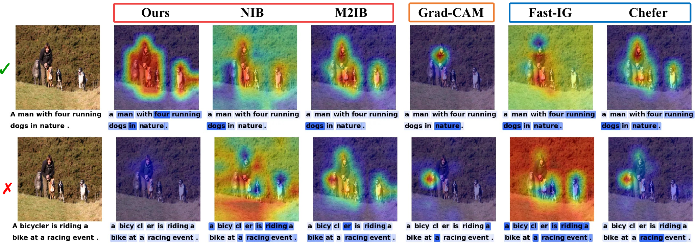

Keep the backbone frozen.
Capture intermediate image or text features from a pretrained vision–language encoder. Learn a bottleneck for this single pair.
Image / textFrozen encoder
MIx Group · University of Birmingham
NeurIPS 2026

Multimodal attribution often uses one modality as proxy supervision to explain another, implicitly assuming semantic alignment between paired inputs. In realistic image–text data, this assumption can fail. We analyze how standard information bottleneck objectives allocate explanatory capacity to spurious cross-modal dependencies, producing forced and over-confident explanations. We introduce TIB, a sample-wise Tempered Information Bottleneck that jointly learns a feature retention mask and a scalar predictive variance. This input-dependent uncertainty adapts fitting pressure to cross-modal reliability, while a separate compression term regulates retained information. The paper evaluates this mechanism on controlled misalignment benchmarks and real-world multimodal datasets.
Method overview
When one modality explains another, the paired input becomes proxy supervision. If that supervision is unreliable, a fixed fitting pressure can produce a forced explanation.
Capture intermediate image or text features from a pretrained vision–language encoder. Learn a bottleneck for this single pair.
A feature-wise mask h preserves useful information. A sample-wise variance σ² controls how much noise replaces suppressed features.
Tempered likelihood weighting makes the fitting term sensitive to predicted variance. A separate KL term charges for retained information.
z = h ⊙ f + σ (1 − h) ⊙ ε
retained features + uncertainty-aware noiseSwitch the caption and comparison method to inspect the paper visualizations on the same image.
The same visual input for both captions.
The paper example highlights the person and dogs under aligned supervision.
A fixed-variance information bottleneck, shown on the same input.
Paper figure These are fixed visualizations from the supplied figure. Parameter changes below do not regenerate them.
View full figureA meaningful caption can support a meaningful explanation. The challenge is what happens when that correspondence disappears.
Interactive mechanism explorer
This scalar illustration follows the implemented equations, with feature \(f=1\) and target dimension \(d=1\). Adjust a control to inspect its effect.
Controls explain the mechanism. They do not train a vision–language model in your browser.
Eq. 6 / Tempered objective
Loss contributions · \(\beta\) changes compression; \(r\) changes fitting
Variance sensitivity · \(\alpha\) changes the slope
At \(\sigma^2=1\), the direct fitting coefficient is 1 for every \(\alpha\).
sg means stop-gradient: the stabilizing weight is detached. The variance still affects the likelihood, noise, and KL. These plots show the objective at fixed \(h\) and \(\sigma^2\), not an optimization run.
Eq. 8 / Stochastic representation
Explore all 19 configuration fields. Defaults come from AttributionConfig; the downloadable code also includes the selected CLIP ViT-B/32 branch profile.
Predicted \(\sigma^2\) and the optimized mask \(h\) are learned per pair. They are distinct from configuration fields such as \(\alpha\), \(\beta\), and the initial mask logit.
@inproceedings{huang2026tib,
title = {{TIB}: Sample-wise Tempered Information Bottleneck for Multimodal Attribution beyond Alignment Assumption},
author = {Qiming Huang and Peixi Liu and Jianbo Jiao},
booktitle = {Advances in Neural Information Processing Systems},
year = {2026}
}Download .bib